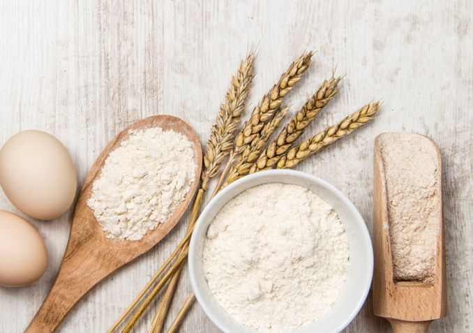

¿Qué usamos?
Utilizamos ingredientes orgánicos de primera calidad, aunque a decir verdad, nuestra estrella es la Masa Madre. La misma vino desde Francia con nuestros abuelos y fue cuidada como una hija por ellos. Es ella la que le da ese sabor característico a todos nuestros productos.
La manteca y la crema de leche también son protagonistas en nuestras recetas, sobretodo en pastelería y facturería. No utilizamos ningún tipo de conservante ni productos químicos para reemplazarlas. Para su tratamiento y manejo nos valemos de técnicas centenarias practicadas en la repostería antigua, cuando el cuidado del producto era un arte antes que una ciencia.
Por ello la presición es nuestra principal herramienta de trabajo, no necesitamos más que eso.
